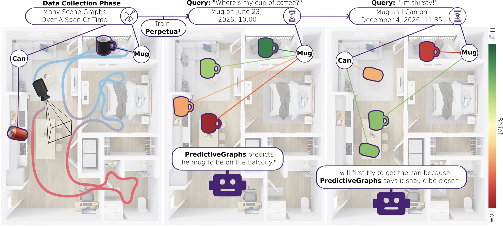
Abstract
We have seen tremendous recent progress in our ability to build "spatio-semantic" representations that enable robots to perform complex reasoning across geometry and semantics. However, the vast majority of these methods lack any ability to perform reasoning across time. This is a desirable property in situations where a robot repeatedly observes an environment where instances may change in between observations, but in a structured way. Consider as an example a home environment where the location of a mug typically moves from the cupboard to a countertop to the sink and then back to the cupboard on a daily basis. We should be able to learn this cyclic behavior and use it to predict the state of the mug in the future. In this work, we propose a method that is able to perform this type of tempo-spatio-semantic reasoning. Underpinning the method is a filter, Perpetua*, that performs Bayesian reasoning on the states of the environment that are observed over time. This filter is integrated within a 3D scene graph structure that we call PredictiveGraphs, where nodes represent objects and edges function as Perpetua* filters encoding spatio-semantic relationships. We validate the method in both simulation and real-world dynamic navigation tasks, where our real-world experiments consist of an environment that is undergoing semi-static changes at a bi-hourly frequency over a period of three weeks. In both settings, we demonstrate that our method outperforms baselines in predicting future environment states, even in the presence of distributional shifts.
Video
How it works
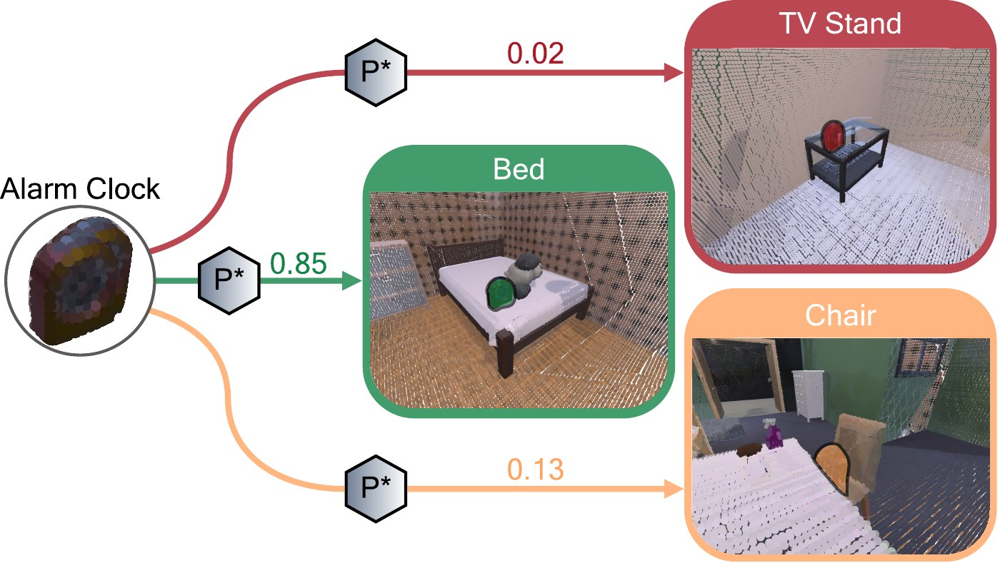
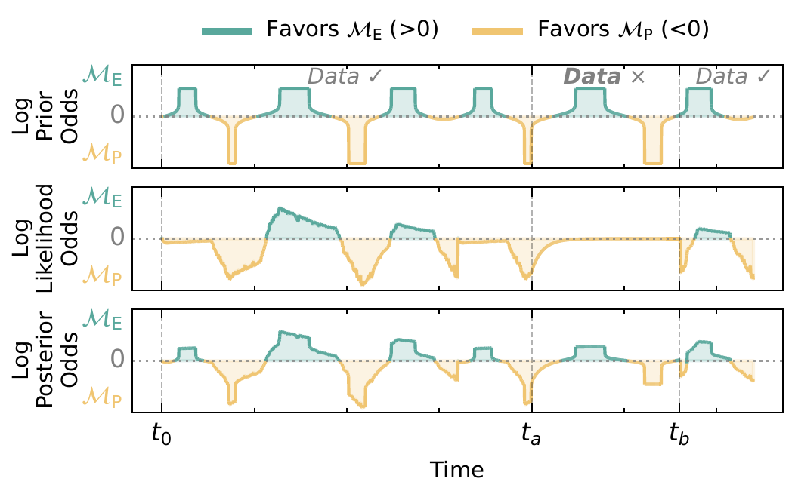
Simulation Experiments
Results
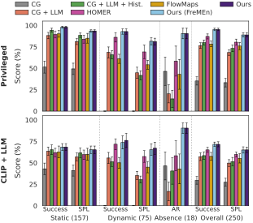
All 15 simulated homes
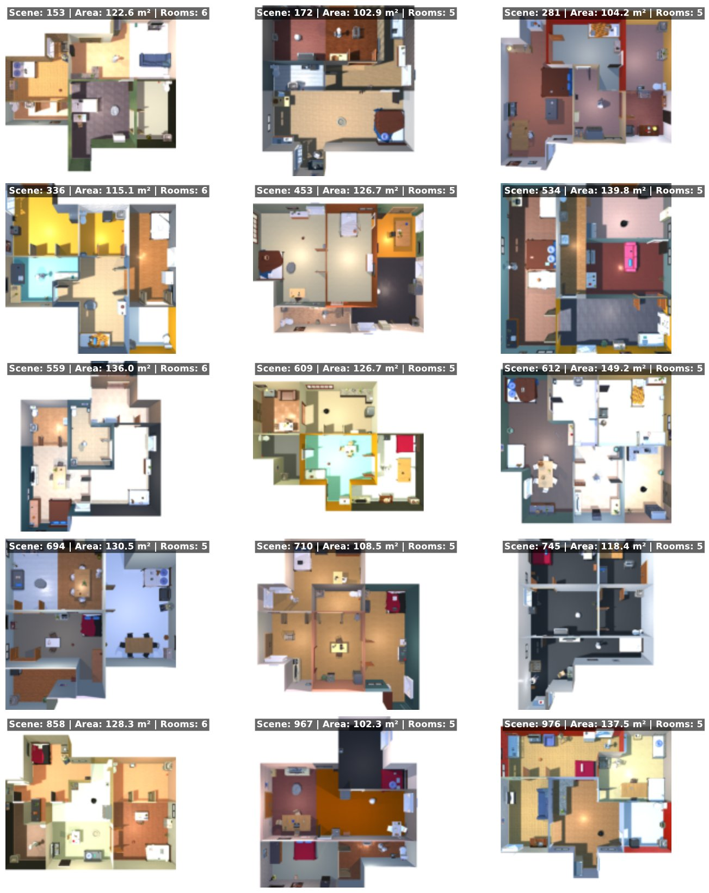
ProcTHOR environments: Top-down view of the different 15 ProcTHOR scenes used in the simulation experiments. Each scene has at least 5 rooms and a navigable space between 100 m² and 150 m².
Real-World Experiments
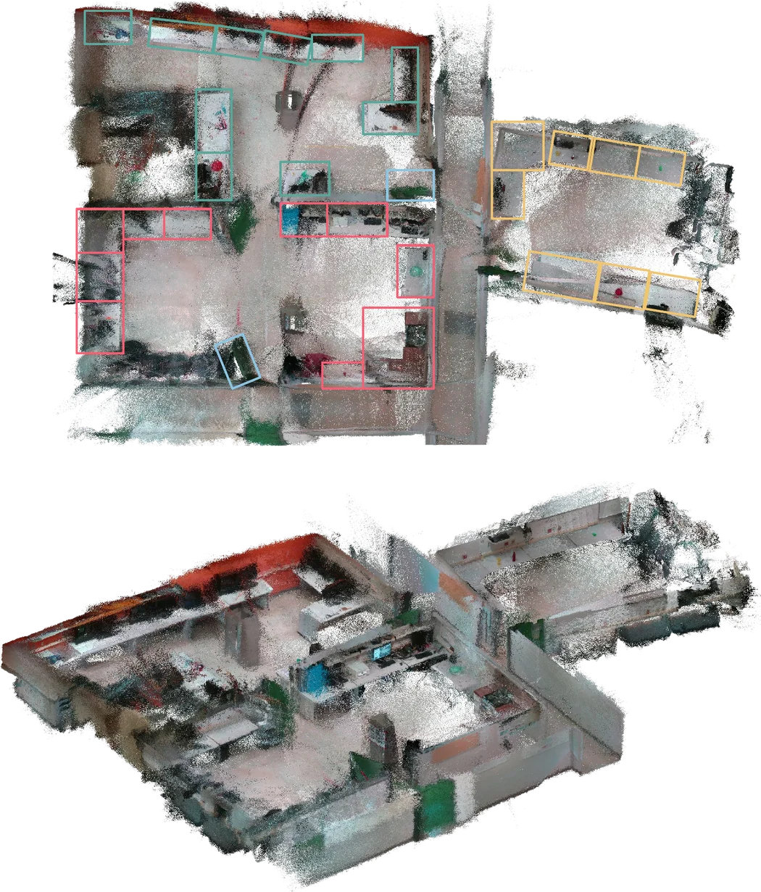
- 3 weeks of semi-static changes, updated every 2 hours
- 3 rooms, 28 receptacles, 21 objects
- 100 open-vocabulary queries, up to a week ahead
- Agilex Ranger Mini 2.0 with a RealSense D435 camera
What the robot sees on arrival
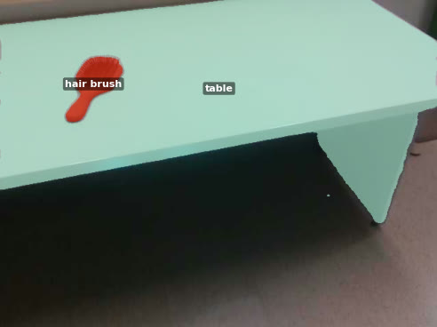
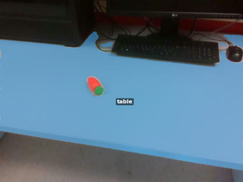
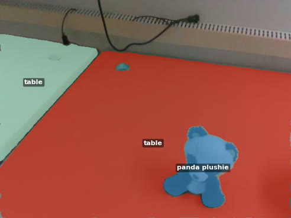
Results
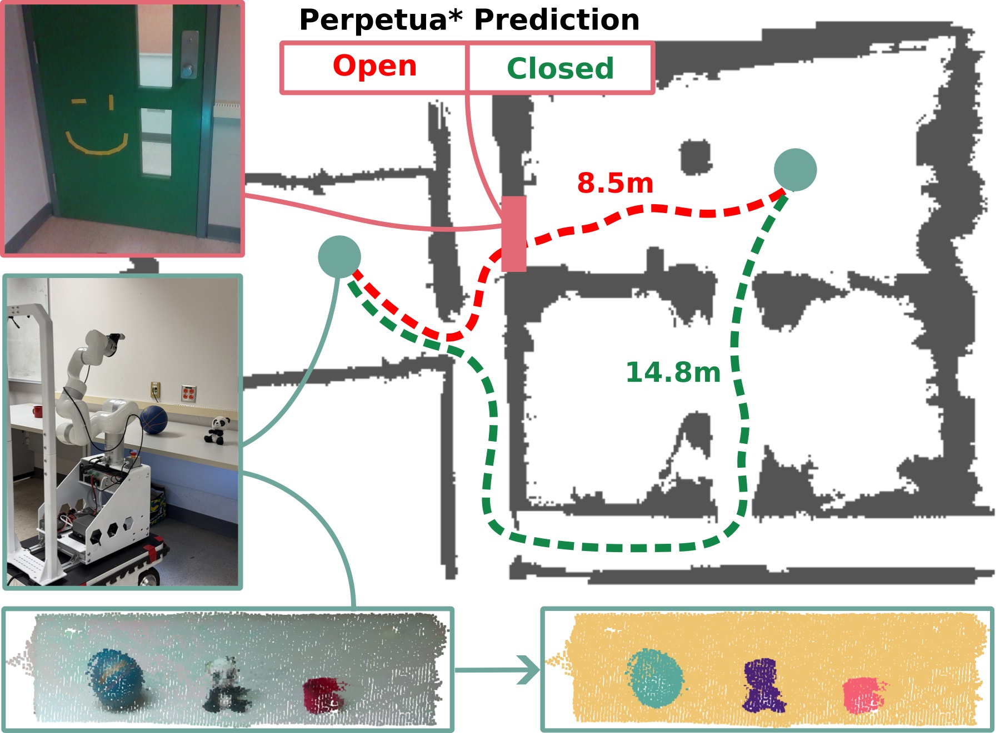
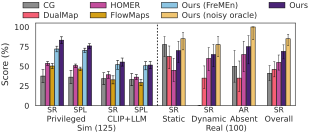
Citation
@article{saavedra2026predictive,
title = {Predictive Spatio-Temporal Scene Graphs for Semi-Static Scenes},
author = {Saavedra-Ruiz, Miguel and Gauthier, Charlie and Gupta, Kumaraditya and
Shahfar, Shima and Ellis, Kirsty and Parkison, Steven and Paull, Liam},
journal = {IEEE Robotics and Automation Letters},
year = {2026}
}